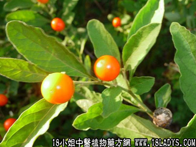

罗丝藕(中药材植物名:铁珊)(植物科目:萝摩科)

别名：连丝藕、玉珊瑚、无叶藤。
植物名：铁珊。
生长环境：本品为无叶灌木。生于干燥的地方，匍伏于岩石上，地面或扳绕树上，也有栽培的，作观赏植物的。
分布：我国广东大陆及海南，印度和越南亦有分布。
入药部分：全株。
采集期：不拘时。
自采地点：家种。
性味：性微凉、味微甘。
功能：收敛止咳。
主治、用量和用法：1、五劳七伤：干用5钱至1两，猪瘦肉适量，煎服；2、咳血：用法同上。
参考资料：另一种植物名光棍树，其干、枝、茎与本品容易混淆（形态详见该项），采集时可从生长形态鉴别之，本品为平铺地面而生，光棍树为小灌木。本品用于内服，光棍树不作内服用。